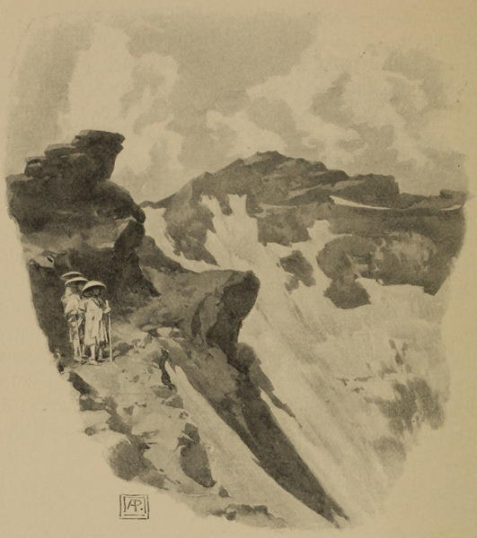

“The crater of Fuji”
Notes in Japan (1896)
Fusiyama, rising in a cone-like form, next became for a short time visible, its summit crowned with pure snow, contrasting with the dark colour of the rocks in the lower parts.
The mountain itself is first seen in faint black streaks, which gradually widen, till, the lines of snow growing small and fine, it is at last revealed in all its naked majesty. Though I have seen numerous perpetual snow-capt mountains in Switzerland, the Pyrenees, &c., I have never witnessed one presenting, in this point of view, an appearance so remarkable and so curious.
In most cases when the snow melts off, it does so in patches, but here, probably owing to the shape of the mountain, it looks as if portions had been designedly removed in such a way as to leave the white stripes perfect and unbroken, in their course down the sides, yet it is far from presenting anything like a stiff or formal appearance, the lines from a distance seeming to graduate, so as to form a soft and harmonious whole. As the hills beside this object of interest and beauty are small and insignificant in comparison, it stands almost, we may say, alone in its solitary grandeur.
This mountain, as may be presumed from the designs of it which are constantly seen on the lacquer ware, porcelain, &c., is greatly admired by the Japanese. It derives its name, we were told, from Fusi, matchless, and Yama, mountain, the Matchless Mountain, and is said to be nearly fifteen thousand feet in altitude.
A Lady’s Visit to Manilla and Japan (1863)
The Fuji-ya Hotel [at Hakone], where we stayed three days, is considered the best foreign hotel in Japan. We certainly found it most comfortable, and the waiting maids in full Japanese costume redeemed it from being prosaic. From the hotel itself, and from the village street we could look down the valley to the Bay of Odawara, and by a short climb above the village we could get a fine view of Mount Fuji. It was only very gradually that we realized the fascination of this mountain for the Japanese; but as day after day the charm of the many mountain ranges of Japan grew upon us, and yet Mount Fuji always towered above all, lightly touched with snow even after the great heat of summer, we could understand how it seemed to them the ideal of everything lofty and pure and poetical.*
*The height of Mount Fuji is 12,365 feet—a total that is easily retained by the memory from its accordance with the months and days of the year.
Japan As We Saw It (Bickersteth) (1893)
The ascent of Fuji involves a long, hard climb for weary miles through lava-ashes, sometimes ankle-deep. The violence of the wind on certain portions of the mountain is proverbial, and by some travelers has been described as so appalling that they were fearful lest some furious blast might blow them into space and scatter their remains over a dozen provinces.
Japan (1897)
No wonder that this noble mass is reckoned throughout the length and breadth of Japan the most sacred of natural objects. No wonder that its form appears painted on almost every Japanese vase, drawn in almost every Japanese picture. No wonder that it is supposed to be the abode of Sinto, the founder of the heroic religion of Japan; or that thousands of pilgrims crowd every year to the foot of its imposing slopes, and toil devoutly up its steep ascent. For it stands aloof from all the neighbouring mountains, and lifts its gray head far above them, as if it claimed to be venerated and worshipped by all surrounding nature. In combination of symmetry of outline with giant height, it may well claim to be the matchless mountain of the world.
Round the World in 1870 (1872)
◀ KyotoNagasaki ▶